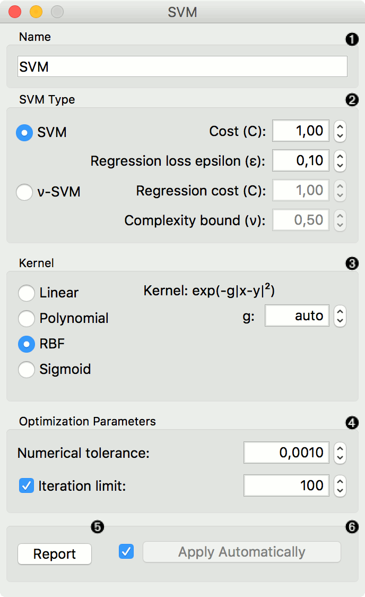
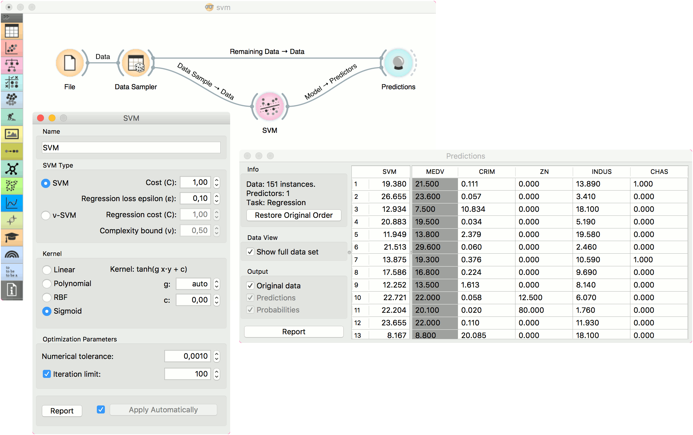
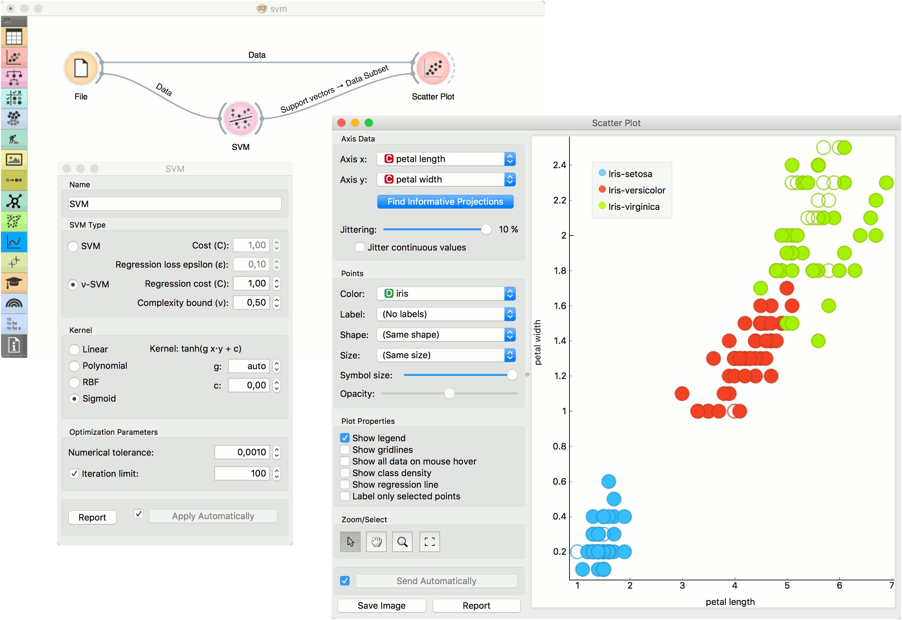

SVM
Support Vector Machines map inputs to higher-dimensional feature spaces.
Inputs
- Data: input dataset
- Preprocessor: preprocessing method(s)
Outputs
- Learner: linear regression learning algorithm
- Model: trained model
- Support Vectors: instances used as support vectors
Support vector machine (SVM) is a machine learning technique that separates the attribute space with a hyperplane, thus maximizing the margin between the instances of different classes or class values. The technique often yields supreme predictive performance results. Orange embeds a popular implementation of SVM from the LIBSVM package. This widget is its graphical user interface.
For regression tasks, SVM performs linear regression in a high dimension feature space using an ε-insensitive loss. Its estimation accuracy depends on a good setting of C, ε and kernel parameters. The widget outputs class predictions based on a SVM Regression.
The widget works for both classification and regression tasks.

- The learner can be given a name under which it will appear in other widgets. The default name is “SVM”.
- SVM type with test error settings. SVM and ν-SVM are based on different minimization of the error function. On the right side, you can set test error bounds:
- SVM:
- Cost: penalty term for loss and applies for classification and regression tasks.
- ε: a parameter to the epsilon-SVR model, applies to regression tasks. Defines the distance from true values within which no penalty is associated with predicted values.
- ν-SVM:
- Cost: penalty term for loss and applies only to regression tasks
- ν: a parameter to the ν-SVR model, applies to classification and regression tasks. An upper bound on the fraction of training errors and a lower bound of the fraction of support vectors.
- SVM:
- Kernel is a function that transforms attribute space to a new feature space to fit the maximum-margin hyperplane, thus allowing the algorithm to create the model with Linear, Polynomial, RBF and Sigmoid kernels. Functions that specify the kernel are presented upon selecting them, and the constants involved are:
- g for the gamma constant in kernel function (the recommended value is 1/k, where k is the number of the attributes, but since there may be no training set given to the widget the default is 0 and the user has to set this option manually),
- c for the constant c0 in the kernel function (default 0), and
- d for the degree of the kernel (default 3).
- Set permitted deviation from the expected value in Numerical Tolerance. Tick the box next to Iteration Limit to set the maximum number of iterations permitted.
- Produce a report.
- Click Apply to commit changes. If you tick the box on the left side of the Apply button, changes will be communicated automatically.
Preprocessing
SVM uses default preprocessing when no other preprocessors are given. It executes them in the following order:
- removes instances with unknown target values
- continuizes categorical variables (with one-hot-encoding)
- removes empty columns
- imputes missing values with mean values
For classification, SVM also normalizes dense and scales sparse data.
To remove default preprocessing, connect an empty Preprocess widget to the learner.
Examples
In the first (regression) example, we have used housing dataset and split the data into two data subsets (Data Sample and Remaining Data) with Data Sampler. The sample was sent to SVM which produced a Model, which was then used in Predictions to predict the values in Remaining Data. A similar schema can be used if the data is already in two separate files; in this case, two File widgets would be used instead of the File - Data Sampler combination.

The second example shows how to use SVM in combination with Scatter Plot. The following workflow trains a SVM model on iris data and outputs support vectors, which are those data instances that were used as support vectors in the learning phase. We can observe which are these data instances in a scatter plot visualization. Note that for the workflow to work correctly, you must set the links between widgets as demonstrated in the screenshot below.
